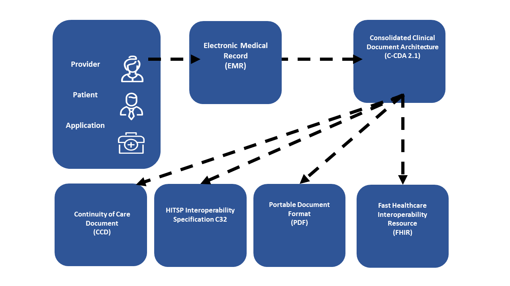
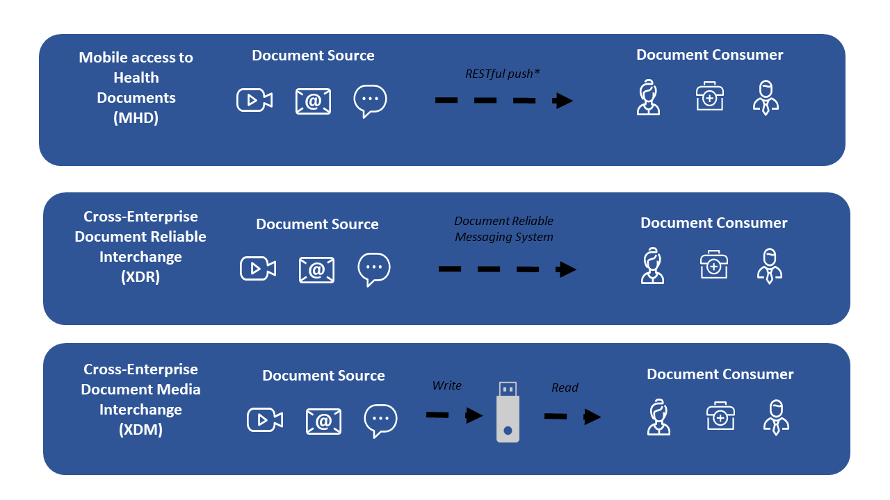
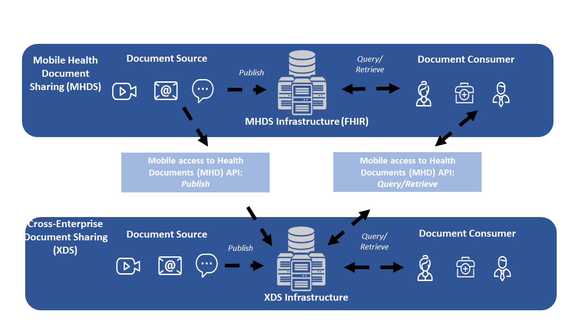
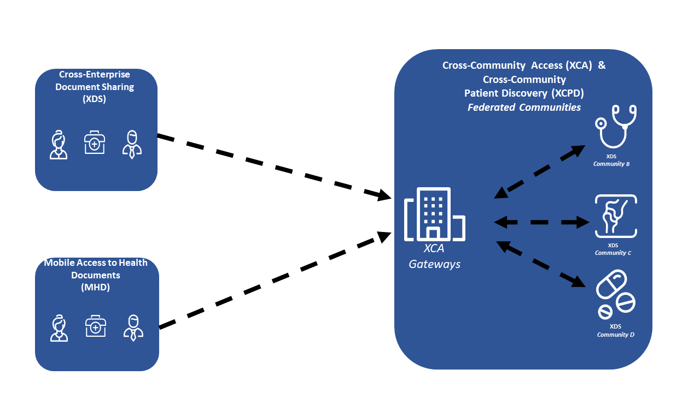
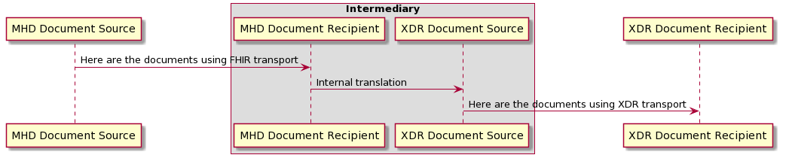
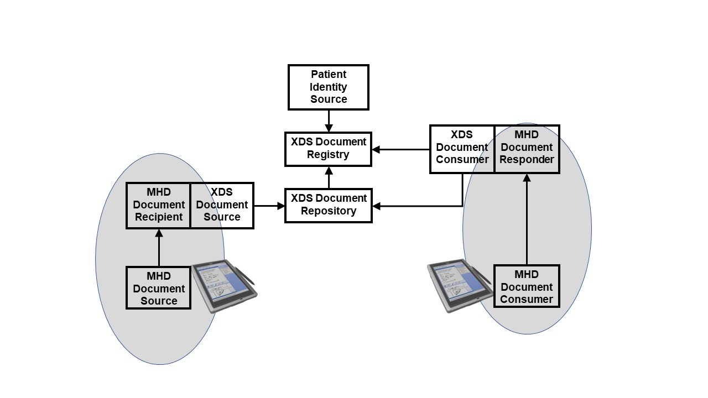
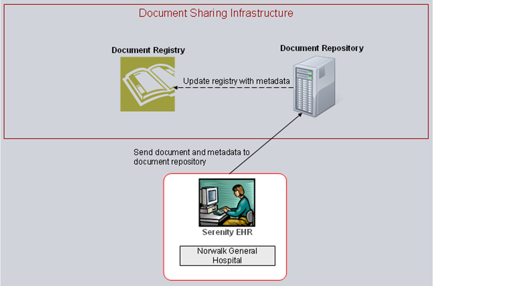
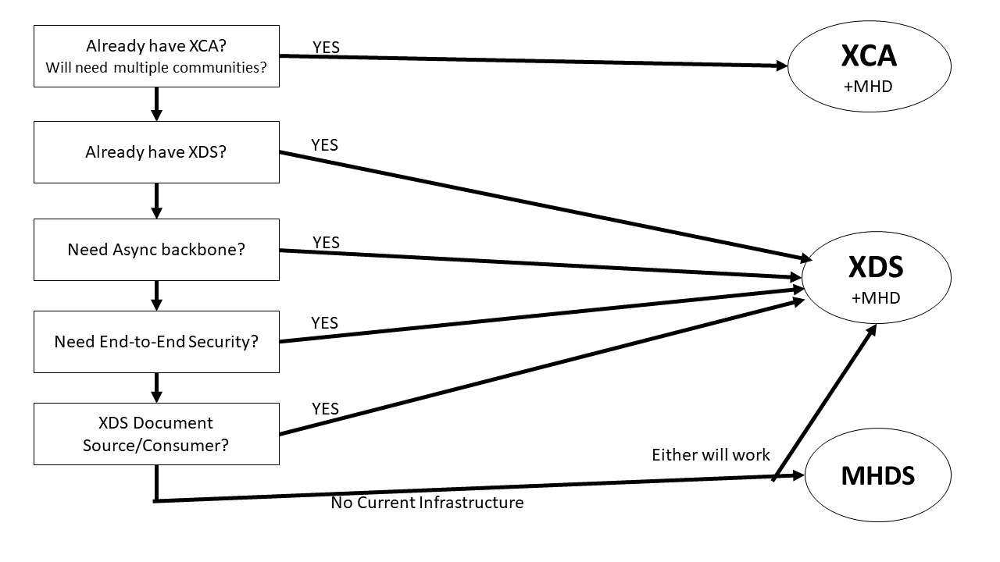
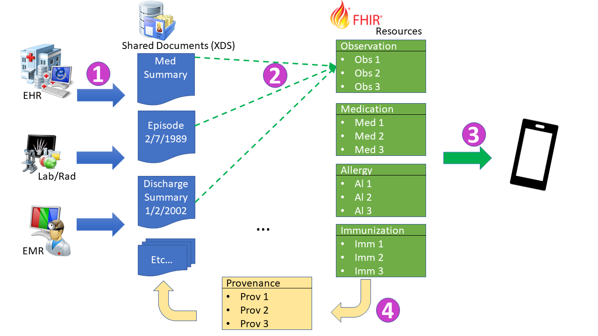
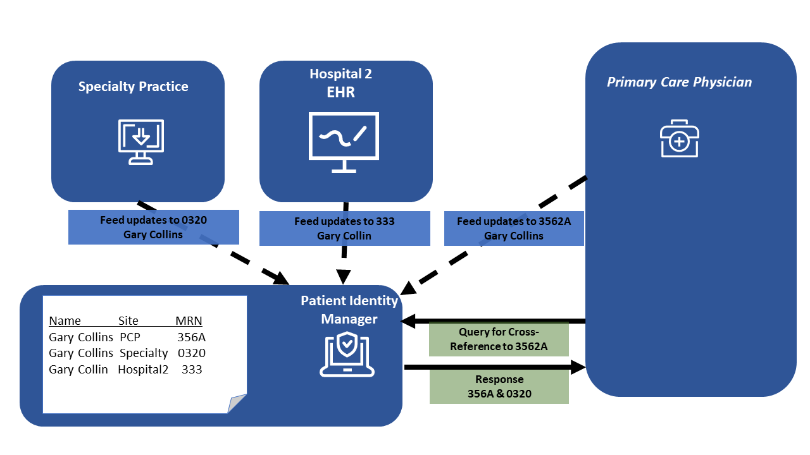

Integrating the Healthcare Enterprise
IHE IT Infrastructure White Paper
Enabling Document Sharing Health Information Exchange Using IHE Profiles
Revision 2.1 - Published
Date: March 19, 2021
Author: ITI Technical Committee
Email: iti@ihe.net
**Please verify you have the most recent version of this white paper. See here for the Published version.
Foreword
This is a white paper of the IHE IT Infrastructure (ITI) domain.
This white paper is published on March 19, 2021. Comments are invited at any time and can be submitted using the ITI Public Comment form or by creating a GitHub Issue. Please reference the section that your comment applies to.
General information about IHE can be found at https://www.ihe.net.
Information about the IHE IT Infrastructure domain can be found at https://www.ihe.net/IHE_Domains.
Information about the organization of IHE Technical Frameworks and Supplements and the process used to create them can be found at https://www.ihe.net/about_ihe/ihe_process and https://www.ihe.net/resources/profiles.
The current version of the IHE IT Infrastructure Technical Framework can be found at https://profiles.ihe.net/ITI.
CONTENTS
- 1 Introduction
- 2 Principles of Health Document Sharing
- 3 Document sharing profiles
- 4 Consuming data as FHIR Resources
- 5 Patient identity management
- 6 Common Provider Directory
- 7 Security and Privacy
- 8 Further Reading
1 Introduction
The Integrating the Healthcare Enterprise (IHE) standards profiling organization has developed a collection of profiles which can be leveraged for use by healthcare communities for the purposes of document sharing. One of the most significant applications of healthcare information technology is the exchange of health information among disparate clinical information systems and otherwise unaffiliated care providers. Across the world, various communities have developed or are developing methods for exchanging health information among healthcare providers, patients, and other authorized parties. The purpose of this white paper is to provide an overview of the collection of IHE profiles which are intended to be used by communities for exchanging health information. The collection of profiles includes support for patient identification, health document location and retrieval, provider directories, and the protection of privacy and security. This white paper will show how various profiles work together to provide a standards based, interoperable approach to community and cross-community health information sharing.
IHE has provided a recorded YouTube webinar on the topic of the HIE-Whitepaper with a focus on the FHIR support available.
1.1 Scope
Effective health information exchange involves a diverse set of activities and a broad set of challenges, whether that exchange takes place among affiliated or unaffiliated care providers. The IT Infrastructure (ITI) domain of IHE has addressed many of these challenges by defining a series of integration profiles to address specific aspects of exchanging healthcare information. Each integration profiles addresses part of the broad set of challenges involved in health information exchange. The profiles, however, do not attempt to address governance and policy choices that significantly affect how the profile is adapted in any particular community. This white paper cannot address all such governance and policy issues but will provide some guidance on where governance and policy issues are applicable and offer some common approaches.
It is very important to note that IHE focuses only on interoperability and does not attempt to solve every issue involved in exchanging health information. These solutions are meant to be plugged into an architecture that is designed and executed by the exchange communities themselves. Thus, while each community will generate an architecture that meets its individual needs, the use of IHE profiles will lead to the creation of standards-based communities.
This white paper will focus on explaining how IHE profiles are used to address interoperability aspects of document sharing and how they work together to solve common document sharing problems. The IHE White Paper Template for XDS Affinity Domain Deployment Planning, provides support for policy and deployment planning. The IHE “Document Sharing Metadata Handbook”, provides guidance on developing policy and vocabulary valuesets for use within the community. For application of Document Sharing for particular clinical use cases, consider the work of the clinical IHE domains:
- Cardiology
- Devices
- Endoscopy
- Eye Care
- Pathology and Laboratory Medicine
- Patient Care Coordination
- Pharmacy
- Quality, Research and Public Health
- Radiation Oncology
- Radiology
1.2 Intended Audience
The assumed audience for this white paper includes those involved in a current or planned health information community of any size and scope that needs an overview of a framework for building a health information exchange model based on open standards. This paper does not cover the technical details as they are found in the IHE Profiles, White Papers, and Webinar material.
Some intended audiences include:
- Govt (MOH, CDC)
- Federal Health Agencies (ONC, HHS, NIST)
- Regional/State Health Agencies (State Public Health Agencies)
- NGOs (WHO, UNICEF)
- Health Information Exchanges
- Standards Development Organizations
- HIT Non-Profits/Professional Associations (GDHP, HIMSS, RSNA, etc.)
- Health Systems
- Ambulatory Clinics
- Long-term, Post-Acute Care
- Executive Offices: CEO, CIO, CMIO, CNIO, CSO, CTO, CPO, C3PO, etc.
1.3 Overview of Health Document Sharing Communities
A health document sharing community (community) exists for the purpose of increasing the accessibility of patient health information across multiple organizations so that clinicians can make more informed decisions about the care that they provide. Today, there are many communities already in production and many more are being planned. The size, nature and scope of communities vary widely but can be characterized by a number of different aspects.
First, some communities are geographically focused while others are not. What often comes to mind when speaking of a community is a regional organization that facilitates information exchange across multiple organizations that are relatively close in proximity. Major metropolitan areas tend to be the focus of these communities, but often a regional community encompasses several rural locales. On the opposite extreme of the geographic aspect of communities is the network of United States Veterans Hospitals. The VA (Veterans Administration) hospitals are spread across the entire map of the US and beyond, yet significant efforts have been spent on being able to exchange data among these geographically separated care centers.
A second characteristic by which to categorize communities is the organizational structure of the community. In some cases, the community consists of a single hospital and several out-patient clinics that have a referral relationship with the hospital. In other cases, a network of competing hospitals, laboratories and private clinics may collaborate to form a community.
A third means by which to describe communities is the scope of the content shared. Some communities have very limited exchange functionality. For instance, a community may focus entirely on electronic lab result delivery or e-prescribing. Most communities define a moderate scope to their exchange activities that might include results delivery, electronic referrals, and perhaps some sharing of encounter-based information (e.g., dictations). More advanced communities leverage their network to include even larger scopes (perhaps including the sharing of documents with the patient’s Personal Health Record, exchange of clinical summaries, regional patient centric workflows, etc.). No two communities are alike in terms of the set of exchange activities that they facilitate.
Finally, a fourth aspect of a community is the size, scope and political jurisdiction(s) that regulate it. The simplest community uses only an ad-hoc arrangement to push documents from one organization to another. National and sub-national jurisdictions have significant effects on the organization and operations of a community.
Despite all the variance among communities, each has the same ultimate goal: to increase the authorized exchange of patient health information across organizations so that clinicians can make better decisions by being more informed about the longitudinal health history. This ultimate goal provides the reason why the community exists, it is their affinity.
Once communities are formed there is a need to exchange health documents across the communities as well as within them. IHE uses the concept of cross-community to describe a federation of communities which use mostly peer-to-peer interactions for the purposes of health document sharing. A community may be a single organization, like the USA Veterans Administration, a complex community of many organizations, or a more simple organization like a single small hospital or facility. Cross-community describes an environment where multiple communities, be they simple, small, complex or large, interact without any understanding of or access to the internal structure of any of the other participants. A large federation of communities is exemplified by the multi-national exchange “European Patients – Smart Open Service” (epSOS).
This paper will describe a set of building blocks for health document sharing and each environment will use some set of those building blocks to enable the architecture desired by the community or communities participating.
1.4 Connectathon and Projectathon
IHE Connectathons are a cross-vendor, live, supervised and structured testing event where industry leaders test implementations of IHE Profiles to advance health IT interoperability. All tests are evaluated on interoperability and conformance to IHE Profiles found in IHE’s Technical Frameworks. The test floor is overseen by IHE’s technical project managers providing a safe, neutral test environment and an unparalleled opportunity for industry collaboration and problem resolution. IHE Connectathons take place multiple times and locations annually around the world to advance health IT and patient safety, including USA, Europe, Japan, and elsewhere.

Benefits of IHE Connectathon Testing
- Reduce Development Costs and Time to Market
- Debug systems and product capabilities within minutes leveraging a broad cross-section of industry partners on-site including:
- Electronic medical record (EMR) vendors, public health agencies, device vendors and key infrastructure components that support health information exchange including Patient Identity Managers, Document Registries and Repositories, Cross Community Gateways
- Leverage 20+ years of standards development experience and test tools developed in partnership with IHE International, IHE USA and National Institute of Standards and Technology (NIST)
- Learn, collaborate, and network with 450+ of the industry’s top professionals at the largest interoperability testing event in the world
- Be present with industry’s top vendors implementing IHE Profiles to enable interoperability
- Learn and speak with the industry’s top leaders on-site at the IHE NA Connectathon
- Qualify to participate and demonstrate IHE Profiles in HIMSS Interoperability Showcases across the globe
Projectathon
The Projectathon is a testing session dedicated to a specific deployment project using a set of IHE Profiles in their interoperability specifications.
Participants to a Projectathon will test conformity and interoperability of their systems or solutions against the deployment project interoperability specifications based on IHE Profiles. For a Projectathon, the test plans and testing tools are customized to the specifics of the deployment projects.
The organization which has the lead of the project has the responsibility to define the testing criteria for the project requirements and publishes the results at the end of the Projectathon. The testing session can be delegated to the IHE team where IHE is experienced and can provide the necessary skills for managing such a testing event. The Projectathon can be the preliminary event before any conformity assessment, quality label or certification process.
2 Principles of IHE for Health Document Sharing
This section describes several principles which are foundational to IHE’s approach to health document sharing.
2.1 General IHE principles
The following general IHE principles are applicable to the set of IHE profiles used for Document Sharing:
IHE profiles describe the interactions between systems and not the implementation within systems. Interactions between systems are typically described by transactions which are technically specific and detailed enough to ensure interoperability among implementing systems. The internal implementation of the systems is not prescribed by IHE. For example, for patient demographic matching IHE specified the format of the query and response but not the algorithm or method used for the demographic matching. This allows freedom for implementations to address scalability, creative functionality, reliability, and other value-add.
IHE profiles are designed to support a wide variety of governance and policies. Because IHE supports adoption of its profiles around the world it is rarely possible to define policies that are applicable in all countries. For this reason, IHE profiles are designed with a variety of governance and policies in mind and are therefore applicable to a wide variety of environments. IHE profiles are designed to be policy neutral and support a broad set of governance; before they can be deployed there are many governance and policy issues that the communities must agree on. Examples of governance and policy issues are things like: roles and responsibilities, privacy, signature requirements, authorization, when to publish, what to publish, administrative roles, configuration, service level agreements, clinical pathways, long-term availability, etc.
IHE assumes there is a general understanding of widely implemented Information Technology Standards. IHE profiles typically leverage underlying technology like XML, TCP/IP, DNS, Digital Certificates (PKI), etc. without detailed explanations.
2.2 Document Sharing Governance
IHE enables interoperable sharing of documents but assumes this sharing occurs under a document sharing governance structure agreed to by all parties involved. The governance structure addresses all policy issues necessary to enable document sharing; content format and coding; and other operational characteristics. The IHE profiles are designed to be agnostic to governance and policy, while also being designed to support and enforce those governance and policy choices. The governance may apply only within a small group, such as a hospital and small physician’s office, or may apply at a large level, like an entire nation. In fact, sometimes temporary or informal governance (e.g., via phone call) based on understanding of existing laws or customs is used for exchange among participants. Typically, in order to allow for effective and efficient interactions, the governance structure is formalized through some legal mechanism. Overlapping governance is common, where one set of agreements exist in the region and a different set of agreements exist across the nation, yet most organizations will eventually want to exchange documents regionally, nationally and internationally.
In addition to general governance agreements, a document sharing community should address the following issues:
Format of document content: To enable interoperable transfer of documents the receiving side must understand the format and structure generated by the sending side. Typically, there is an agreement on a set of document formats which must or may be supported. This could include unstructured content like PDF or text documents; or a more structured format like CDA or FHIR documents; or a specific implementation guide applied to CDA or FHIR document for a particular purpose. The key is to ensure that whatever type of content is shared, the receiving system is able to interpret the content in an appropriate way, either through human review or machine processing.
Coding within documents: Structured documents often include coded data derived from a given coding system. Agreeing on which coding systems to use for which data is often covered by an implementation guide for the structured document. Agreeing to an implementation guide, or a general guideline for coding systems to use, is necessary to enable semantic understanding of the document received.
Coding of metadata: Metadata are data that provide information about one or more aspects of the document. In the case of IHE-defined document exchange, specific metadata are coded within the structure of the content being exchanged. See Section 2.6 Value of Metadata where the metadata defined by IHE are introduced. Some of that metadata have values chosen from a coding system defined by the governance of the sharing community. Because IHE profiles can be applied in many parts of the world where coding systems are different, IHE has not specified which code sets to use and this decision must be made among the systems exchanging documents.
The purpose of this aspect of governance is to enable semantic interoperability among participating partners. When the Cross-enterprise Document Sharing (XDS) Profile is used the governance is provided through the XDS Affinity Domain, see Section 3.2 Centralized Discovery and Retrieve.
2.3 Distinction between Documents and Messages
The HL7 standard for Structured Documents Section describes the document vs. message distinction as follows “A document is designed to be persistent for long periods of time, whereas messages are more often expected to be transient. There is a place for both of these constructs in healthcare.” HL7 characterizes a document by the following properties:
Persistence – Documents are persistent over time. The content of the document does not change from one moment to another. A document represents information stored at a single instance in time.
Wholeness - A document is a whole unit of information. Parts of the document may be created or edited separately, or may also be authenticated or legally authenticated, but the entire document is still to be treated as a whole unit.
Stewardship – A document is maintained over its lifetime by a custodian, either an organization or a person entrusted with its care.
Context - A clinical document establishes the default context for its contents
Potential for authentication - A clinical document is an assemblage of information that is intended to be legally authenticated.
Health messages, on the other hand, are not expected to be persistent, but represent a unit of information at a moment in time where the context is often implied by the transaction partners. The content is not always whole, where context may exist in the messaging environment rather than inside the message itself. The distinction between message and documents can get blurry at times, as messages sometimes can be persisted and can contain all necessary context. In fact, messages can be converted to documents and can carry documents within their content. But documents are expected to be persistent, relevant over time and having the same meaning regardless of environment. And messages need not be any of those things.
The scope of ‘document’ in Document Sharing Profiles would prefer that documents have the above “Document” properties, but does not require that documents have these properties. The only property required is that there is a mime-type for the document.
2.3.1 FHIR-Document vs CDA-Document
Two structured and coded health specific document types are Clinical Document Architecture (CDA) and Fast Health Interoperability Resources (FHIR) documents. Both of these formats are defined by HL7. CDA has received much of the attention over the past 20 years, with FHIR emerging in 2010s. FHIR's initial focus was on an interactive query/response model referred to as "REST"; but FHIR has a "Document" encoding as well. The FHIR Document model has a top level resource that sets the context, content, and flow of the FHIR Document, and that is followed by copies of the data resources; all of this is encoded into a single bundle. This single bundle is able to be managed in Document Sharing just like any other Document.
The FHIR Document has a benefit of being made up of the same resources that one would get from a Query/Response API. There is clear identity (.id) of each of these resources to so they are clearly distinct, which can be used for tracking if the data contained previously known. The FHIR Document model includes more consistent metadata and provenance for each resource. This traceability makes accessing the content within a FHIR Document more consistent limiting unnecessary duplication of data.
2.4 Longitudinal Patient Record
Building on the document concepts described above in Section 2.3 Distinction between Documents and Messages of persistence, wholeness, stewardship and context, we can identify the principle of the longitudinal patient record which is foundational and central to health document sharing. Document Sharing Communities are patient centric, and the patient identity is associated with every document shared.
Care providers, which may support a broad variety of healthcare facilities: private practice, nursing home, ambulatory clinic, acute care in-patient facility, etc., are typically the sources or creators of health documents. Typically, a patient will go through a sequence of encounters in different care settings over the course of his/her lifetime. With each encounter there is the potential that a provider will produce a health document that can be shared with the community. Documents shared by the provider and tracked by a centralized registry or federation of communities form a longitudinal record for the patients that received care among those providers within the community. Longitudinal records, therefore, are expected to last over the span of many decades, just as the documents that comprise them are expected to have persistence, wholeness, stewardship, context, and potential for authentication. As a health information exchange is adopted it is a common practice to use an historical bulk data load or comprehensive patient summary to initialize the electronic patient record with data for historical purposes.
Within a care setting Clinical Data Repositories (CDR) or Clinical Information Model Infrastructure databases might be used to enhance Clinical Decision Support as a complement to document discovery. These databases would not be nationwide, but rather be local to the patient’s care facility. Like EHRs themselves, Document Sharing supports interoperability among local systems and supports a longitudinal patient record that spans across many local systems potentially using multiple different database systems.
2.5 Use of Documents
IHE Document Sharing profiles are content neutral, meaning that any type of information without regard to content and representation is supported. A document is any collection of bytes, including proprietary and textual formats. It is expected that a deployment of Document Sharing will restrict the format and content of documents exchanged to those agreed to by the partners in the exchange. While the format and content of a document is not restrictively defined, it is expected to be a coherent set of healthcare data that includes enough context to be useful to a practitioner. A document should have the document characteristics namely, persistence, wholeness, stewardship, context and potential for authentication.
IHE Document Sharing profiles assume that a patient identity is associated with every document shared.
The most common document content standards that are profiled by IHE are HL7 Clinical Document Architecture (CDA), and HL7 FHIR Document. These standard formats supports the coding of the clinical content which allows for use of the content both for display purposes as well as machine processing. Although IHE encourages the use of CDA or FHIR as the document content type of choice, it does not restrict the content of a document in any way. Many times, a document will be encoded in PDF or simple text (e.g., U.S. Department of Veterans Affairs “Blue Button” program). Images and manifest documents may also be exchanged using the same infrastructure. By defining a document so liberally, IHE enables a common health record sharing infrastructure that is flexible enough to handle the content types agreed to by the partners in the exchange.
IHE and other organizations have integration profiles which define document content for specific, commonly occurring cases. For example, the IHE Pathology and Laboratory Medicine domain has defined an XD-LAB Content Profile to support sharing laboratory reports. Likewise, the IHE Patient Care Coordination (PCC) domain has defined various content profiles including a Medical Summary (XDS-MS) Content Profile and an Emergency Department Referral (EDR) Content Profile. XDS-MS supports a patient’s transfer of care from one care setting to another, and EDR supports the situation where a physician determines that a patient should proceed directly to an emergency department for care. In each of these cases, it is useful for IHE to profile (define) both the transport and the content of the documents so that true interoperability can more easily be achieved throughout the healthcare continuum.
The IHE Content Profiles utilize two abstract actors “Content Creator” and “Content Consumer”, utilizing an abstraction of “Share Content”; where “Share Content” can be any of the Document Sharing infrastructures including MHDS, XDS, XDR, XCA, etc.

Figure 2.5-1: Document Sharing Actor Diagram
IHE Content Profiles can be found:
FHIR-Document https://wiki.ihe.net/index.php/Category:FHIR-Doc
2.6 Value of Metadata
Another key principle leveraged by IHE Document Sharing is the use of metadata. Document metadata are data that provides information about one or more aspects of the document. While a document may be any collection of bytes, IHE defines a collection of metadata about the document that aid its identity, discovery, routing, security, provenance, privacy, authenticity and electronic pre-processing. The set of metadata is defined to facilitate interoperability, so that receiving systems can manage, route and administer documents even if they are unable to interpret the contents of the document. The metadata are defined in such a way that additional metadata, defined outside of IHE, can be sent. Of course, systems not enabled to understand the additional metadata will ignore them, but this capability allows the set of metadata defined by IHE, which is already extensive and robust, to be extended when local needs arise.
Metadata serve multiple purposes. They allow systems to perform:
automated management of the documents – like assigning priorities or work tasks
automated patient identification – adding the new information to the correct patient’s local record
support for provenance management – making decisions based on authority of creator of content
support for episodic searches – by type, date of service
support relationships between documents
support privacy/authorization controls – enabling access to content only where appropriate
support security and integrity controls

Any metadata element may support overlapping purposes, but the combination of metadata elements provides a robust understanding of the document and enables automated and manual management of the document without the requirement access to the detailed clinical information contained within the document.
2.7 Document Relationships
The metadata defined in the IHE Document Sharing model encompasses more than just characteristics of documents. In fact, the metadata model is very rich, encompassing the relationships between documents through use of folders, submission sets, and associations. For a complete list of document metadata, refer to ITI TF-3: 4.1 Abstract Metadata Model. This abstract metadata model has two representations: Section 4.2 ebRIM Representation used by XDS and XCA; and Section 4.5 FHIR Representation used by MHDS and MHD.
Documents: Each document shared using IHE-defined constructs comes with a collection of metadata which describes the document. The metadata describing the document includes things like: document identifier, patient identifier and demographics, document author, class of document, confidentiality of document, creation time, and events causing creation of document, document format and several more.
Folders: Metadata shared using IHE-defined constructs can also describe folders and document’s membership in folders. A folder may be used to collect documents for many purposes, like ease of access or describing a functional purpose.
Submission Set: When documents are published or pushed using IHE transactions they are collected into submission sets to reflect the collection of documents sent at a given moment. Since a submission set reflects a collection of documents it shares some of the same metadata as a document, like patient identifier and author, and adds metadata reflecting the collection like identifier of the source, intended recipient and submission time.
Document Associations: The document sharing metadata supports the description of associations between documents. The associations supported are: append, replace, transform, transform with replace, and signs (i.e., digital signature). The append, replace, and transform associations support representation of document lifecycle events, where a document is associated with documents which are created as part of lifecycle events related to the original document.

Figure 2.7-1: Multiple Document formats of the same document related by Document Associations.
Depicted in Figure 2.7-1 is a master document of format C-CDA with a set of transforms of the same content into CCD©, C32, PDF, and a FHIR Document. This enables a Document Consumer to pull the content that best fits their ability to consume. Note the master document could be of any format, so one might choose to have the master document as the FHIR Document. Similar associations functionality would also support human language translations.
2.8 Document Sharing Models
IHE has enabled three distinct Document Sharing Models that share the principles in this section. Because the principles are the same it is relatively simple to implement more than one model to accomplish multiple objectives. The three models are:
Push – in this model, clinical content in the form of documents and metadata is sent directly to a known recipient, or published on media for delivery
Centralized Discovery and Retrieve – in this model, a centralized locator is used to discover the location of documents which enables a retrieval of the document from a custodian who has registered existence of the document with the centralized locator
Federated Discovery and Retrieve – in this model, a collection of peer entities are enabled to query each other to locate documents of interest, followed by retrieval of specific documents.
These models share the common definition of a document and metadata describing documents, folders, submission sets and document associations. Each requires some level of governance structure in order to operate, although there is some difference in the governance needs. For instance, the centralized model requires knowledge only of the centralized locator which can then provide connections with distributed document repositories. For Push and Federated approaches a detailed directory of participating entitles is typically used to ensure that the push or query transactions are sent to the proper place. All include strong support for authenticity and encryption on transport. Privacy requirements vary especially between the Push, where privacy policy is generally determined prior to initiation of the action, and Discovery mechanisms where privacy policy is most often determined prior to responding to the request. So, while the issues that need to be resolved through governance are largely the same, the resolutions will sometimes vary depending on the model chosen.
It is expected that most communities of exchange will start with one of the three forms of document exchange and, if needed, adopt the others later. The addition of a new model to an existing deployment is relatively simple because the IHE profiles are based on common principles.
2.9 Patient Identity Management
The Document Sharing mechanisms enabled through IHE assume that a patient is associated with every document shared. That patient is described within the metadata describing the document.
In the case of a Push, it is up to the receiving entity to resolve the patient by using the metadata containing identifiers and demographics of the patient. It is preferable to resolve the patient prior to sending documents and using the patient identifier metadata element to unambiguously communicate the patient’s identity.
In the Discovery models the document query requires the specification of a patient identifier as known by the query recipient. So, in these models it is necessary to resolve the patient prior to searching for documents. In fact, the query does not carry any patient demographic data beyond the patient identifier.
Resolving the patient is a complex subject made more complex through historic norms, regulations, and business factors. Some regions have a universal identifier, but most regions do not. IHE provides several profiles that aid the resolution of the patient identifier.
2.10 Locating sharing partners
One of the challenges of Document Sharing that is not directly addressed by IHE is the identification of Document Sharing partners. Each Document Sharing model has a different type of need: where a centralized discovery approach requires the identification of the central locator, the peer-based push and discovery mode requires identification of each of the peers. This ability to discover sharing partners can be accomplished in many different ways and a clear preference is not yet apparent. The approaches can be broadly characterized as a) locating electronic services which can provide information and b) locating patient specific source of information.
For locating electronic services which can provide information, some approaches currently used in various parts of the world are:
Local configuration files – many organizations keep a local configuration file or address book which is managed manually whenever a new sharing partner is identified or updated.
Service Registry – a services registry is sometimes used as a centralized service available to all participants.
Healthcare Provider Directory profiles – enables a directory of individual and organizational entities along with electronic services provided by those entities. See Section 6 Common Provider Directory.
For locating source of information about a particular patient, some approaches are:
Patient Specific Health Data Locator – the Cross-Community Patient Discovery (XCPD) Profile enables a special type of locator which can be used to find entities holding data about specific patients. See Section 5 Patient identity management for more information about XCPD.
Patient Identity Cross-Reference (PIX) – may be used to find an assigning authority of an organization which has registered patient demographics for the patient.
Patient Demographic Query (PDQ) – may be used to find an assigning authority of an organization which has registered patient demographics for the patient.
Cross-Enterprise Document Sharing (XDS) – used to locate documents related to a specific patient, see Section 3.2.
2.11 Security/Privacy
IHE addresses Privacy and Security through the use of Risk Assessment and Management. Each profile is assessed for various types of risks and the profile includes mitigations identified through that assessment in the privacy and security considerations.
IHE includes profiles specific to interoperability of security and privacy. Interoperability profiles are not enough to fully address privacy or security. Privacy and security are enabled and enforced at many levels of depth including policy, physical environment, procedures, organizational, departmental, functional, and information technology.
IHE provides profiles that support privacy and security audit logging, user and system identification and authentication, access control, encryption, data integrity, digital signatures, and privacy consent management. Security and Privacy and the profiles IHE offers are discussed in Section 7 Security and Privacy.
2.12 Dynamic Documents
There are three different models of a document: Stable, Delayed Assembly, and On-Demand.
A Stable document is one where the content has been gathered together at the time the document entry is authored. The stable model fits best with environments that can produce a document and have it stored in a Document Repository for retrieval as is necessary. The Stable document entry can be replaced, but the content is fixed at the time the document entry is authored.
A Delayed Assembly document is one where a Document Source (or Document Source Repository) publishes a promise to produce a document of a specific kind and identity. The document is not assembled until the first Document Consumer requests to retrieve that document. The retrieve request triggers the creation (delayed assembly) of the document. The Document Entry is updated with the given hash and size, and the document is now available as a Stable document. This model can be used when the Document Source is a database that is not inherently document based, but can produce a document for persistent storage upon request. The Document Source can indicate all of the metadata about the document (except the hash and size), but chooses to not produce the document content until a retrieve request is made.
An On-Demand document is one where a Document Source (or Document Source Repository) publishes a promise to produce a document of a specific kind, but content that is expected to change over time. The On-Demand model is used when the document source can ensure that the returned document always contains information that is known to be accurate at the time of request. This can be used in cases where the document source is a database that is not inherently document based, and document consumers wish to always receive the most up to date information available. Thus, a request two months apart may contain different content given changes during the two month span. The document instance isn't created until a Document Consumer requests to retrieve an instance of the document. The retrieve request triggers the creation of an instance of the document. The instance could be preserved as a snapshot, which is a kind of Association managed off of the On-Demand document entry.
3 Document sharing profiles
The key actors in health information exchange are the document source actors – those applications or modules that create the document to be shared, and the document consumer actors – those applications or modules that retrieve the document to act on it (i.e., present it to the user, import it into the receiving system, etc.). The strength of the Document Sharing profiles is that they enable effective sharing of data among multiple, disparate systems in a way that minimizes the burden that data sharing imposes on those systems. These profiles may be categorized according to three different data sharing models:
Push – supports point-to-point push of documents where content is sent directly to the intended recipient found through manual means or infrastructure enabled directory
Centralized Discovery and Retrieve (XDS Affinity Domain) – a community of sharing partners agrees to use a common infrastructure to enable Health Document Sharing. A document source will publish the existence of documents to a location that is accessible to other systems. Then, document consumers can discover document locations that have been previously published and pull a copy of the document.
Federated Discovery and Retrieve – content is pulled directly from the content holder who is found through manual means or a directory
The three models are designed to support different use cases. The Push model can be relatively simple but it cannot satisfy all use cases because it relies on the source of documents to know where those documents will be needed. The Discovery models can also handle use cases like:
Treatment of a new condition where prior conditions may be relevant
Open Referral, where the patient is allowed to choose the specialist
Highly mobile patient
Emergency
Patient with many medical conditions
Patient with complex condition
The IHE profiles addressing these models are:
Push – Mobile access to Health Documents (MHD), Cross-Enterprise Document Reliable Interchange (XDR), and Cross-Enterprise Document Media Interchange (XDM)
Centralized Discovery and Retrieve – Mobile access to Health Documents (MHD), Mobile Health Document Sharing (MHDS), and Cross-Enterprise Document Sharing (XDS)
Federated Discovery and Retrieve – Cross-Community Access (XCA)
The following figures show the flow of data for each of these models.

Figure 3-1: Data Flow for Push Sharing Models.
Figure 3-1 shows three different Push models. The sending system is depicted on the left sending to a recipient on the right.

Figure 3-2: Data Flow for Centralized Discovery and Retrieve Sharing Models.
Figure 3-2 shows a MHDS community, and a XDS community; with clients publishing on the left side and clients consuming on the right side. Note that MHD clients are shown with the ability to be accessing the XDS Affinity Domain using the MHD API. This figure is showing the relationship of the profiles and actors, but is not depicting all possible deployment architectures.

Figure 3-3: Data Flow for Federalization Discovery and Retrieve Sharing Models.
Figure 3-3 shows a deployment depicting set of communities that are linked by the XCPD for patient discovery, and XCA for federated Query for Documents and Retrieve Documents. On the Left side are XDS and MHD style clients. In this case the Publication functionality is supported as they are interacting locally with an XDS Affinity Domain.
The following sections will describe in more detail the three models.
3.1 Push
3.1.1 Cross-Enterprise Document Reliable Interchange (XDR)
The XDR Profile provides a point-to-point method of sending documents to a specific recipient. It leverages common principles as described in Section 2. It sends documents and metadata using the same Web-Services reliable transport that is used to publish documents in the Centralized Discovery and Retrieve Document model.
The typical use case for XDR is the patient referral. Dr. Suwati may wish to refer her patient Mary to a specialist, Dr. Lima, who works across town. XDR may be used to send the referral document (and possibly other clinical documents) from Dr. Suwati's Apollo EMR to Dr. Lima's Great Charts EMR.
The Point-to-Point Transmission of Documents slide deck provides more detail about XDR.
3.1.2 Cross-Enterprise Document Media Interchange (XDM)
The Cross-Enterprise Document Media Interchange (XDM) Profile addresses situations where the electronic exchange of clinical information does not rely on networked connections between the parties exchanging the information. In these cases, electronic media (such as CDs and USB drives) or email may be employed to transport the data from one system to another.
The XDM e-Mail Option is a logical advance for directed e-mail exchange that provides content packaging and metadata to enable accurate processing. The XDM Profile has been adopted in national exchange specifications such as the USA defined “Direct Project”.
The XDM CD-ROM and USB-Memory Options are logical methods for physically handing the patient records to the patient them-selves; or for delivery via secure courier.
Whether the data is transferred via electronic media or e-mail, the same format is used to express the documents, metadata, and encapsulation structure. The XDM Profile can be especially useful when there is no established infrastructure in place between those who have documents and those that need them. Thus the XDM Profile can be used in environments where much of the Governance is managed manually, out-of-band. The receiver of an XDM exchange does need to be robust to high variability of the content due to this lack of automated Governance.
Again, the patient referral use case is a typical one that may employ XDM. Dr. Suwati may wish to refer her patient Mary to an orthopedist who does not have an electronic endpoint to receive the referral documentation or to an orthopedist of Mary’s choice in which case the point of service is unknown at the time of the referral. Dr. Suwati decides to write a referral letter and to create an image file of the X-ray of Mary's leg. Dr. Suwati employs her EMR to write this letter and the image file to a USB key using the XDM Profile. She then gives the USB key to Mary so that she may take the files with her to the orthopedist.
The Point-to-Point Transmission of Documents slide deck provides more detail about XDM.
3.1.3 Mobile access to Health Documents (MHD) push
The MHD Profile provides a point-to-point method of sending documents to a specific recipient. It leverages common principles described in Section 2. It sends documents and metadata using FHIR Rest push to deliver one or more documents to a Document Recipient.
The typical use case for MHD in this mode is when documents are known to be needed by a recipient. Such as a patient referral in the use case given in XDR.
In addition the MHD can be used as an push API to a system that ultimately delivers the content. For example diagrammed below is MHD initiating a push to an Intermediary. In this use case the MHD push request could be handled by the intermediary that further pushes the content using XDR or an e-mail carrying XDM (e.g., the Direct Project). On the recipient side (not shown in the diagram) the MHD could be used by an intermediary to forward a XDR or XDM push content. MHD (not shown in the diagram) could also be used on the recipient side as a query/retrieve where the intermediary has cached content addressed to that recipient. This Intermediary is an example of a Direct Project HISP with the added functionality provided by MHD, enabling FHIR based push with end-to-end interoperability between three different transport stacks in MHD, XDR, and e-mail XDM.

3.1.4 Cross-Community Document Reliable Interchange (XCDR)
The XCDR Profile provides a point-to-point method of sending documents to a specific community. It leverages common principles as described in Section 2. It sends documents and metadata using the same Web-Services reliable transport that is used to publish documents in the Centralized Discovery and Retrieve Document model.
An XCDR Responding Gateway for a community may support submissions to multiple communities that are behind it. These communities would typically be described as parent-child relationships in a common directory.
3.2 Centralized Discovery and Retrieve
The Mobile Health Document Sharing (MHDS) and Cross-Enterprise Document Sharing (XDS) Profiles enable centralized discovery of health documents and retrieval of those documents from distributed document repositories. Mobile access to Health Documents (MHD) provides a simplified API for Document Source and Document Consumer Actors.
The following scenario describes a typical exchange of clinical information using XDS or MHDS. Dr. Suwati works for New Hope Medical Partners which provides her with an EMR system. Her patient, Mary Gomez, just explained to the doctor that she was recently hospitalized at Norwalk General Hospital. Dr. Suwati would like to review the medical records that documented Mary's hospital stay. Using her EMR, Dr. Suwati searches for recent documents for Mary Gomez created by Norwalk General Hospital's EHR. Having found several documents (lab results, radiology reports, a discharge summary, etc.), Dr. Suwati chooses first to view Mary's radiology reports. Having read the reports, she discards them. However, Dr. Suwati reads the discharge summary and then saves it to Mary's record in the local EMR.
In this scenario of health information exchange, the primary player (Dr. Suwati) has three principal objectives: find patient records available from external systems, view a selection of those records, and incorporate a select number of those records to her local system. This sequence of actions is repeated continually in the healthcare setting. To address this very common scenario, IHE has created the MHDS Profile and the XDS Profile, a method to coordinate the authorized discovery and sharing of medical documents among disparate information systems.
XDS minimizes the burden imposed on the document sources when sharing documents by establishing the use of two infrastructure components (the document registry and document repositories), which handle most of the effort involved in exchanging clinical data. This separation allows for minimal yet rich metadata to be centrally managed in a document registry while the full clinical details stay protected within distributed document repositories.
MHDS allows for a similar separation of repository, but does not call out the repository actor. The MHD Document Source simply preserves the document in an appropriate repository available to the MHDS community, and records the URL to that location when publishing the metadata to the MHDS repository. The MHD Document Source can include the document within the publication request where the MHDS Registry will store and provide access to it centrally. MHDS also includes solutions for Patient Identity Management Registry (PMIR), Terminology Services (SVCM), organization directory (mCSD), user authentication/authorization (IUA), system security (ATNA), and Consistent Time (CT). More details available in the MHDS Profile.
Both XDS and MHDS enable the automation of discovery and retrieve of document content by more advanced health information systems.
The following Figure 3.2-1 shows the use of the MHD Profile as an API to an XDS Document Sharing exchange.

Figure 3.2-1: XDS environment with MHD as API.
The IHE Youtube channel has the XDS webinar and the MHD webinar available.
3.2.1 Document Publishing
The document registry and document repositories always work hand-in-hand, the one being useless without the other. It may be convenient to think of the document registry and document repositories like a public library. The document repositories are a library's set of shelves, an organized resting place for books (i.e., medical documents) that are available to library patrons. The document registry is the library's card-catalog, a tool for locating specific books that lie on those rows and rows of shelves. Unlike a library, the bookshelves are potentially deployed within each participating organization; thus the books are controlled by the original organization until the moment that another organization requests a copy.
It is the responsibility of the publisher to put the books (documents) on the shelf and provide the information for the card-catalog (metadata). The library will step in to update the card-catalog with the data needed to find the new book. In IHE jargon the publisher is called the document source, whereas the act of putting the book on the shelf and then cataloging it is referred to as "provide and register." Thus, the document source sends a copy of medical documents and associated metadata to the document repository, and the document repository subsequently sends the metadata to the document registry (see Figure 3.2.1-1).

Figure 3.2.1-1: Provide and Register Document
The actual location of the document repository will depend on the local deployment. IHE provides flexibility to enable many different deployment approaches.
The document repository may be combined with the document registry, allowing for an integrated environment where no external “update registry” transaction is needed.
The document repository could be combined with a document source allowing a large hospital system to enable its local EMR system to also act as a document repository. In this case, there is no externally recognized “provide and register” transaction, but simply the “update registry” transaction from the hospital system to the central document registry.
There is no restriction on how many document repositories can be associated with a single document registry. However, any document repository must be made available for authorized retrieval of the documents contained and referenced within the Document Registry.
There are no constraints on where a document repository is hosted, the decision is based on many implementation considerations. For instance, a hospital may want to keep its clinical content local in which case it supplies a repository hosted locally. Or a small physician office may have no ability to support a repository and will prefer to use a repository provided by an external organization, like a hospital system of an infrastructure only partner.
3.2.2 Document Discovery
To complete our analogy, we must consider the library patron (Dr. Suwati in our case), whose goal is to find specific books. The patron interacts with the catalog; sometimes searching for specific books, other times browsing what is available. Once the locations of interesting books are discovered, the patron fetches them from the shelves. In our Document Sharing drama, the document consumer (our library patron) interacts with the Document Registry to find medical records of interest. This process is known as the query for documents. The act of fetching the medical record from a document repository is known as the retrieve document. Of course with the structured and coded metadata, this step of discovery can be highly automated.
3.2.3 Governance
As described in Section 1 Principles of Health Document Sharing, Document Sharing is document content neutral; uses document metadata that are represented in a structured, standard format; and supports longevity of document storage.
MHD and XDS require a governance structure and define the XDS Affinity Domain or a Community as the agent for that governance. An XDS Affinity domain or a Community is a group that have agreed to work together using a common set of policies and Document Sharing. Some examples are:
Regional community of care
Nationwide Electronic Health Record (EHR)
Personal Health Record (PHR) applications and services
Specialist (cardiology, oncology) or disease-oriented (diabetes) care networks
Government-sponsored or federation of enterprises
Insurance provider supported communities
Document Sharing is patient centric thus requires that a Patient Identity Domain coordinates use of a single Patient Identification. In XDS Domain called this is called an XDS Affinity Domain Patient Identification Domain (XAD-PID). A XAD-PID is a patient identifier assigning authority which provides a single unique identifier for each patient for which documents are registered in the document registry. This ensures that, for example, when submitting documents for Mary Gomez the same unique patient identifier is associated with each document for Mary Gomez, and thus a search can reliably find all of Mary’s documents by using this single unique identifier.
There are various methods defined by IHE to support Patient Identity Management.
Further detail regarding deployment of an XDS Affinity Domain may be found in the Template for XDS Affinity Domain Deployment Planning IHE ITI White Paper.
Document Sharing is commonly deployed in an integrated environment which makes use of many IHE profiles working together to enable all aspects of a Document Sharing environment. The services include:
Section 7 Security and Privacy Profiles like ATNA, CT, XUA, BPPC and others
3.2.4 Notifications
The XDS Profile supports registration of content and the ability to query and retrieve from a centralized service, but there are many use cases where a system (e.g., system acting on behalf of a clinician) may wish to be proactively notified when a new document is made available. DSUB describes the use of subscription and notification mechanisms for use within an XDS Affinity Domain. The subscription allows for the matching of metadata during the publication of a new document for a given patient, and results a notification which can be parsed:
- Using a push-style method of notification where the "Document Metadata Subscriber" Actor subscribes to receive notifications at the "Document Metadata Notification Recipient" Actor about the availability of documents based on specific criteria or,
- Using a pull-style method which creates a "Notification Pull Point" Actor able to store notifications targeted to a specific recipient. Notifications stored in the Pull Point can be retrieved by the "Notification Puller" Actor.
The Publication and Discovery slide deck provides more detail about XDS and DSUB.
3.3 Federated Discovery and Retrieve
A community, such as an XDS Affinity Domain, is a means for a specific set of related organizations/facilities to exchange clinical information. But care-givers need access to a patient's entire longitudinal health history, regardless of where that historic information was created. The population is mobile, sometimes due to a temporary situation like a vacation, reoccurring like seasonal housing, work related, or some other choice. Therefore many patients receive care outside of their home community and sometimes the care received externally can be very significant clinically. A very specific healthcare related use-case is when a patient is seeking the care of a specialist. So, there is a need to share health information between two communities. The Cross-Community Access (XCA) Profile was developed to address this need.
To implement XCA, a community builds two services called gateways through which all inter-community transactions will flow. An Initiating Gateway is used to send queries to other communities, while a Responding Gateway is employed to receive queries and respond to them. Behind each gateway may be a single organization, like the USA Veterans Administration, a complex community of many organizations, or a more simple organization like a single small hospital or facility. The gateway may hide the internal structure of these participants in the cross-community exchange, or may expose them as identifiable communities reachable through the gateway.
XCA is based on the discovery and retrieve pattern defined in XDS, but does not require that either community use XDS. Rather than the centralized model of XDS, which aids locating documents of interest, the XCA model enables a federated approach, where discovery of documents of interest requires a query to each community that might hold such documents. The XCA gateways are the conduit through which these transactions flow.
The extension of XCA beyond XDS based communities is an important characteristic. A community that is not XDS based, such as the aforementioned USA Veterans Administration, can develop services that implement the interface characteristics of XCA Initiating and Responding Gateways. Since XCA defines only the interface characteristics, proprietary networks are able to support Document Sharing without changing their internal architecture.
The Federation aspects of XCA allow for easy expansion of a network to add new gateway participants in a way that has minimal impact on the creators of content, which still publish information locally, and those that need the data, which use the same query mechanism no matter how broadly the query is federated.
The Federation of many communities does create a larger patient identity problem, and thus a federation approach to patient identity is needed as well. This patient identity federation is profiled in the Cross-Community Patient Discovery (XCPD) Profile. For more information on this profile, see Section 5.3.
The Cross-Community slide deck provides more detail about XCA and XCPD.
3.4 Choosing an infrastructure
Presented is the Centralized Document Registry model of XDS and MHDS, the Federated Community Exchange of XCA, and the API access model enabled by MHD along side the classic access model defined in XDS/XCA. These choices present two very important alternatives that need to be considered.

Figure 3.4-1: Decision tree on which Infrastructure to use
First, recognize that the MHD as an API for publishing and consuming documents is always available regardless of use of MHDS, XDR, XDS, or XCA. The clients can be enabled to use legacy (XDR/XDS/XCA or MHD based query/retrieve or publication. Where one has an XDR, XDS, or XCA infrastructure; one can always add MHD as a more simple API.
Where there are existing source systems or consumer systems that are using the legacy XDS or XCA design; then one must use XDS or XCA infrastructure. At this point there is no way to support legacy edge systems with the MHDS infrastructure.
Where no existing infrastructure exists, there is still critical distinctions that would encourage the choice of infrastructure.
- XCA and XDS are the only solution that enable asynchronous communications. The technology that XCA and XDS are based on is more flexible enabling requests and responses to be decoupled. This is important when the communications may be to remote locations, locations that are not always connected, or locations that might need extra time to process requests.
- XCA and XDS are the only solution that enable end-to-end security. This is important when there are intermediaries that are only partially trusted, where data claims need to be cryptographically checked at the ends of the communications, or where communications are crossing jurisdiction boundaries (e.g., EC rules around the use of AS4)
Where none of these conditions exist, then the choice could be XDS or MHDS based.
4 Consuming data as FHIR Resources
A challenge that Document Sharing has is on the consuming side. The Principles of a Document are more beneficial to the source. The source is in control of each document creation, and content. Therefore, a consuming application must be robust to the fact that the data may not be broken down or organized in a way that is helpful to the consumer application. There may not even be the information that the consumer wants in any given document.
The Mobile Cross-Enterprise Document Data Element Extraction (mXDE) Profile provides the means to access data elements extracted from shared structured documents. The profile enables the deployment of health data exchange infrastructures where fine-grained access to health data coexists and complements the sharing of coarse-grained documents and the fine-grained data elements they contain.
This profile is based on the reality that health information sharing relies on different granularities of exchange:
- Document-Level Granularity: share and access documents as a composition of various data elements to reflect the information known and produced during a care or administrative workflow step. This level of granularity is optimum to ensure that contained data has clarity of context in care delivery and reflects source attestation (responsibility) of clinical data shared.
- Data Element-Level Granularity: access a specific type of data element (e.g., vital signs, medications, etc.). This level of granularity is optimum when the list of data elements relevant to a “time span” or a set of encounters is of interest. Examples of situations where this level of granularity may be optimum include access to a list of allergies at the time of medication dispensation, or information reconciliation at the time of hospital admission. Each granularity level delivers unique benefits and this profile provides efficient access to both levels.
This profile defines rules to ensure consistency and traceability of information used for clinical decisions. When a data element is accessed by a Clinical Data Consumer, identifiers from that data element can be used to access one or more documents in which this data element was originally recorded, providing a valuable broader clinical context.
The flows of information are depicted in the Figure 4-1:

Figure 4-1: mXDE Flow from Documents to Resources
- Documents are published into a Document Sharing infrastructure. This solution supports all IHE models of Document Sharing including XDS, XCA, and MHDS.
- Specific data elements are extracted from the structured documents per mXDE Profile.
- Data elements (e.g., allergies) queried using the FHIR based Query for Existing Data for Mobile (QEDm) Profile (Query_for_Existing_Data_for_Mobile).
- Each data element is linked to the document(s) from which it was extracted per mXDE Profile. Clinician accesses context of any data element of interest using source documents (XDS, MHD Profiles) providing the clinical context in which the observation was recorded.
For a more detailed guide, see the mXDE webinar
5 Patient identity management
The Document Sharing defined in this white paper is patient centric, meaning that a patient is associated with each document shared. When data related to an individual patient is exchanged among healthcare information systems it is critical to ensure that the participating systems are referring to the same patient. This requirement can be accomplished in several different ways.
One possible way would have each transaction carry enough demographic data to ensure that the partner is able to match the patient through demographic matching with locally held characteristics. The challenges of “enough” demographic data is a difficult problem. It includes issues around demographics changing over time (name changes) and other aspects of demographics matching rules. There is also concern around privacy when unnecessarily transporting patient demographics.
A Patient Identity is distinct from Patient Identifier, in that a Patient Identifier is a unique value within a domain; whereas the Patient Identity is made up of one or more Patient Identifier(s) and identifying information including what is classically understood as demographics and also identifiers issued by any recognized authority. These attributes of a Patient Identity could include name (family name, given name(s), etc.), phone, email, gender, birth date, address(s), marital status, photo, others to contact, preference for language, general practitioner(s), and links to other Patient Identities. The use of identifiers from other recognized authorities would include identifiers issued by healthcare organizations, but also by non-healthcare organizations such as government issued identifiers such as drivers license number, social security number, or passport number; or any identifier that a patient can be authenticated by such as a Voluntary Health Identifier (VHID) being a specific example of an identifier assigned outside of treatment or a Decentralized Identifier (DID) being an example of a general purpose identifier that can be authenticated.
IHE recommends that the identification of the patient be done through patient identifiers in a common or accepted patient identification domain. Thus, prior to the exchange of healthcare information the partners agree on a commonly known patient identifier to refer to the patient. This recommendation, however, is often non-trivial and the patient identity management profiles enable this aspect of Document Sharing. Some regions and nations have enabled the use of a unique patient identifier that is widely available but many places still need profiles which aid in patient identifier discovery.
Systems participating in Document Sharing frequently use locally assigned patient identifier domains. A patient identifier domain is defined as a single system or a set of interconnected systems that all share a common patient identification scheme (an identifier and an assignment process to a patient) and issuing authority for patient identifiers.
The following table introduces the IHE Profiles for Patient Identity Management in a Document Sharing Health Information Exchange.
The four IHE Profiles support various styles of distributed management of patient identities. The table identifies, for each profile, key "Architecture Capabilities" that distinguish each of the Profiles, to aid with picking the right solution for various settings and needs. The third column in the table describes some deployment considerations including systems design and policy.
Table 5-1: IHE Profiles that Support Various Styles of Distributed Management of Patient ID
| Patient Identification Profile | Architecture Capabilities | Deployment Considerations |
|---|---|---|
| Patient Demographics Query (PDQ) | 1. Supports the access to a registry of identities. 2. It supports the ability to query patient identity domains of interest, by a set of demographics traits and get in response one or more matching identities with their complete set of demographics traits. |
1. The process to create and update the registry of identities along with their demographics needs to be addressed at deployment time for each one of the identity domains served. |
| Patient Id Cross-referencing (PIX) | 1. Supports the linking of patient identifiers from different domains. 2. Each identifier domain entirely controls the creation, updates, and merges of its patient identities. 3. The consumer of identity cross-references does not need to know any of the patient demographics as managed by the domain controlling the identity. |
1. Each deployment relies on a cross-referencing algorithm which is centrally managed and needs to be quality controlled. 2. The consumers of cross-references between identities from different identity domains either persist the cross-reference and actively processes notification updates (profile option), or never persist cross-references and re-query when needed. |
| Cross-Community Patient Discovery (XCPD) | 1. Supports access between distributed peer patient identity domains. 2. It supports the ability to query by a set of demographics traits, including a domain-specific patient identifier, and get in response one or more matching identities with a complete set of demographics traits, and usually the patient identifier from the remote patient identity domains. |
1. The process to create and update the peer patient identity domain needs to be addressed at deployment time for each one of the identity domains served. |
| Patient Master Identity Registry (PMIR) | 1. Supports the collaborative creation, access, update, and merge process of shared master patient identity. 2. The identity registry is a passive store for such shared (or golden) identities that are under the collaborative control of identity sources. |
1. Each deployment defines the policies to be followed by identity sources to ensure stability and quality of the shared master identities they create, update, and merge. 2. There is a mechanism to distribute all create, update, and merge actions to identity consumer actors, which have a duty to reflect these changes in their patient-specific information stores. |
The Patient Identity Management deck provides more detail about PIX and PDQ. The Patient Master Identity Registry (PMIR) Webinar covers more depth on PMIR.
5.1 Patient Identity Cross-Reference (PIX)
The Patient Identity Cross-Reference PIX Profile supports the access to a central registry of cross-referenced patient identities, and the feed of patient identity updates from distributed patient identity domains.
Each system that issues patient identities is considered an assigning authority, and every assigning authority is uniquely identified. The set of identities issued by an assigning authority are considered a Patient Identity Domain or Patient Identifier Domain. The combination of the unique assigning authority (aka The Patient Identity Domain) with the unique Patient Identifier assigned by that assigning authority to the patient, is a globally unique Patient Identifier. The PIX manager (server) receives a feed of new or updated patient identities from each assigning authority, and will cross-reference identifiers based on some configured algorithm. This algorithm is not defined by IHE as it is local policy and will need to adjust to local constraints and policies.
For example, "Gary Collins" may be identified as 3562A at the office of his Primary Care Physician (PCP) and 0320 at his specialty practice. The systems are participating in a Health Information Exchange and using the PIX Profile. As these identifiers were created or updated the Patient ID Manager was informed using the PIX feed transaction. Within the Patient ID Manager "Gary Collins" with identifier 3562A and 0320 are matched with a 99% confidence, where as "Gary Collin" is not considered strong enough matched with only a 30% confidence due to the last name difference. These determinations are based on local constraints and policies, and are described here only for illustrative purposes. If the PCP's system wants to communicate with the specialist's system about Gary Collins, both systems must be able to know that 3562A assigned by the PCP offices is equivalent to 0320 assigned by the specialist’s office. The use of the PIX query for cross-references from the Patient ID Manager will give them the cross-reference patient identifiers specific to each assigning authority with a high confidence match.

Figure 5.1-1: Patient identifier cross-referencing
The PIX Profile is IHE's answer to the difficulty of managing an individual patient's multiple Identifiers. A PIX Manager system receives feeds from multiple patient identity domains, such as the PCP and specialist offices, and uses the demographics in those feeds to create a cross-referencing table which associates identities with matching demographics and does not associate identities found not to match. It should be noted that the PIX Profile does not specify how patient matching occurs. Each deployment is welcome to use their own matching algorithms to determine which IDs should be cross-referenced. The IHE profile focuses only on the interfacing characteristics that would be consistent regardless of how the PIX Manager matches the identifiers.
A consumer system may query the PIX Manager to receive a list of identifiers which are cross-referenced with the identifier specified in the query. In this way the PCP office can discover the identifier used by the specialist’s system and thus can communicate with that system using a known patient identifier.
A primary use of the PIX Profile is to enable document consumers and document sources using the XDS Profile to find the patient’s identifier in that XDS Affinity Domain Patient Identifier Domain (XAD-PID). Centralized Discovery and Retrieve are described above in Section 3.2.
The Patient Identifier Cross-reference for Mobile (PIXm) provides similar query functionality as PIX but leverages the FHIR standard. PIXm can be used as an API to a Patient Identity Management system like PIX or Patient Master Identity Registry (PMIR) defines.
This is an introduction to the Profiles use within an HIE. These profiles include other use-case support, and other optional functions. Please reference the Profiles for details in PIX and PIXm.
5.2 Patient Demographics Query (PDQ)
Demographics (information describing the patient in general) are used to help identify the patient. With information on dates of birth and gender, information about Leslie Ramsi, a male born on May-2-1968, can be distinguished from that of Leslie Ramsi, a female born on July-23-1987.
The Patient Demographics Query PDQ Profile enables client systems to discover full identity information on a Patient given some set of demographics information the client knows. The PDQ service is made available by systems with more comprehensive and more accurate demographic information about patients, and provide a query mechanism so that the details can be discovered.
A typical use of PDQ is to discover the patient's XDS Affinity Domain Patient ID. Imagine that Justin McCarthy heads to the local public health department for a vaccination. The public health department's clinical system does not assign local patient identifiers and thus cannot use the PIX Profile to discover Justin's XDS Affinity Domain Patient ID (a required element for the XDS transactions described above). The public health department can use PDQ to find matches for Justin and will receive Justin's XDS Affinity Domain Patient ID as part of the demographics returned. With the knowledge of Justin's XDS Affinity Domain Patient ID, the public health department can now publish his vaccination record to the community via the XDS Profile.
The Patient Demographics Query for Mobile (PDQm) Profile provides similar functionality as PDQ but uses the FHIR standard. PDQm can be a FHIR API backed by a PDQ query or a Cross-Enterprise Patient Discovery (XCPD) query.
This is an introduction to the Profiles use within an HIE. These profiles include other use-case support, and other optional functions. Please reference the Profiles for details in PDQ and PDQm.
5.3 Cross-Community Patient Discovery (XCPD)
The Cross-Community Patient Discovery (XCPD) Profile defines a means to discover mutually known patients and correlations those patients' identifiers across communities.
XCPD is similar in function to PDQ but is used with the Federated Discovery and Retrieve model of Document Sharing. XCPD enables discovery that a patient is known and potentially has information at a given community. Once this is known, the requester can use XCA to obtain documents for that patient from that community. XCPD also enables "Record Locater Services" that allow requesters to discover a patient is known in multiple communities without having to ask each one. XCPD supports a hierarchical approach which bridges communities.
To illustrate the use of XCPD, imagine that Dr. Holsen has an encounter with his patient, Trudy Levitz. At the moment, Trudy lives in Indianapolis; however, she recently moved there from Chicago. Thus, the majority of Trudy's past medical history is stored in the clinical systems of provider institutions in Chicago. Fortunately, Dr. Holsen's EHR has the ability to discover patient data that exists outside of the local, Indianapolis-based community. Dr. Holsen queries to the Chicago community and finds the relevant patient identifiers from the Chicago community that represent Trudy. With this information, Dr. Holsen can subsequently use XCA to look for documents containing Trudy’s past medical history held within the Chicago community.
This is an introduction to the Profiles use within an HIE. These profiles include other use-case support, and other optional functions. Please reference the Profile for details in XCPD. The Cross-Community slide deck and webinar 8 Further Reading, provide more detail about XCPD.
5.4 Patient Master Identity Registry (PMIR)
The Patient Master Identity Registry PMIR Profile is a collaborative community based system of cooperating patient identity sources maintaining a master identity for each patient. PMIR leverages the FHIR standard.
For example, a consumer system may query the PMIR registry to receive the shared master Patient Identity (aka. golden identity) based on their local identifiers or based on the identifying characteristics of the patient (demographics). In this way a PCP office can discover the master Patient Identity so that it can communicate with the systems in that community using a known patient identifier. This query uses Patient Identity Cross-referencing for Mobile (PIXm) or Patient Demographics Query for Mobile (PDQm).
Patient identity source will feed create, update, or merge events to the PMIR registry, which will further propagate these changes to a set of patient identity consumers that have subscribed. Upon receiving a create, update, or merge event these subscribed consumers are expected to update their patient information accordingly. For example when a merge has been declared, the subscribed consumer will merge into the surviving identity any data that was known against the merged identity. This set of patient identity source keep the master identity accurate, using update when there are changes to the demographics.
The PMIR, PDQm, and PIXm Profiles are used within the MHDS Profile to manage and find the patient’s identifier in that community as part of the Centralized Discovery and Retrieve environment.
This is an introduction to the PMIR Profile use within MHDS. PMIR Profile includes other optional functions. Please reference the Profile for details in PMIR.
6 Common Provider Directory
As with patient identity management, the management of data related to healthcare providers (both individual providers and provider organizations) is a fundamental challenge for communities. IHE has defined the Mobile Care Services Discovery (mCDS) and Healthcare Provider Directory (HPD) Profiles to addresses this challenge. There are two principal benefits of using a provider directory. First, it provides a means to disambiguate the identity of providers (i.e., allow one to distinguish between the 58 year-old male pediatric nurse named Lindsay Smith and the 32 year-old female orthopedic surgeon Lindsay Smith). Second, it offers a method to discover a provider's contact information (e.g., phone numbers, street address, etc., as well as an electronic endpoint and digital certificate that may be used for trusted communication).
The referral process (one provider referring a patient to the care of another provider) is one of the most common uses of the a provider directory. When Dr. Palov wishes to send his patient Mary Blythe to a female endocrinologist who speaks Spanish, he may query the Directory to find contact information for providers that match those criteria. Similarly, Dr. Palov may wish to refer another patient, Thomas Reed, to the local Mercy Hospital. Dr. Palov could query the Directory to discover the hospital's electronic endpoint (e.g., a secure email address or a repository endpoint) so that he may forward some of Mr. Reed's records to the hospital in advance of his visit.
The healthcare provider directory profiles describe both how to store data regarding healthcare providers and also how to subsequently access that information. Within the directory, one may also store relationships between providers. For example, Nurse Joe may be an individual provider who belongs to the organizational provider General Hospital.
7 Security and Privacy
The security considerations for a content module are dependent upon the security provisions defined by the grouped actor(s).
This section will discuss how a community that leverages IHE Profiles for document sharing can protect patient privacy and information security. The topic of Security and Privacy is covered in slide decks 1 and 2 and the Security and Privacy Profiles Introduction is long-form narrated.
An especially important aspect that is beyond the scope of IHE is the definition of the overall policies of the community. There are white papers and handbooks from IHE, but there is no single policy that must be put in place by an IHE based community to ensure privacy and security.
In this section, we will discuss potential policy decisions and positions with regard to the profiles. It is especially important for the reader to understand that the scope of an IHE profile is only the technical details necessary to ensure interoperability. It is up to any organization building a community to understand and carefully implement the policies of that community and to perform the appropriate risk analysis. Although this section is not going to define the policies that a community should have, it will explore some of the policy building activities to demonstrate how such policies can be supported.
The Policy Environment is made up of many layers of policies. These policies work together in an interlocking hierarchy. We will introduce some of these layers in this section and show how they influence the technology. At the highest layer are international policies, like the International Data Protection Principles. Countries or regions will have specific policies. Some examples are USA HIPAA Security and Privacy Rules, with further refinement by the states. There are horizontal policies that are common among a specific industry, such as those from medical professional societies. Then within the enterprise will be specific information technology policies. As shown in this section, the IHE Profiles offer not only the means to exchange information, but to do so in a way that is supportive of many of the policies mentioned.
The policy landscape that the community is built on needs to be defined well before the community is built.
7.1 Policies and Risk Management
IHE solves Interoperability problems via the implementation of technology standards. It does not define Privacy or Security Policies, Risk Management, Healthcare Application Functionality, Operating System Functionality, Physical Controls, or even general Network Controls.
While community Policies and Risk Management are outside its scope, IHE does recognize that these elements are a necessary piece of a system implementation. The IHE IT Infrastructure technical white paper, Template for XDS Affinity Domain Deployment Planning outlines some of the issues that should be evaluated for inclusion in the local Policy creation and Risk Management decisions. It is therefore the duty of system implementers to take this guidance into account as part of their Risk Management practices.
Implementers need to be aware of different kinds of policies that need to be harmonized with those policies of the local health enterprises connected to the community. The following is a list of sample policy fragments to stimulate discussion:
Policies for who has access to what type of documents in the community
Policies for who is allowed to publish documents into the community
Policies on the acceptable types of documents that can be published into the community
Policies that indicate acceptable levels of risk within community
Policies that indicate what sanctions will be imposed on individuals that violate the community policies
Policies on training and awareness
Policies on user provisioning and de-provisioning within the community and local operation
Policies on emergency mode operations
Policies on acceptable network use (browser, decency, external-email access, etc.)
Policies on user authentication methods that are acceptable
Policies on backup and recovery planning
Policies on acceptable third-party access
Policies on secondary use of the information in the community
Policies on the availability of the community systems (are the community systems considered life critical, normal, or low priority)
Policies for maintenance downtime
Policies for length of time that information will be maintained in the community
These policies are not a flat set, but often interlock and at other times cascade. An important set of policies are those around emergency modes. There are wide definitions of cases that are referred to as emergency mode. These emergency modes need to be recognized for the risks they present. When these use cases are factored in up-front, the mitigations are reasonable.
Natural or manmade catastrophic disaster (e.g., hurricane, earthquake) – often times additional workforce migrates into the area from other places to help out. These individuals need to quickly be screened and provisioned with appropriate access.
Utility failure (e.g., electric failure) – this situation is common and easily handled through uninterruptible power supplies and backup generation
IT infrastructure failure (e.g., hard drive crash) – this situation is also common and handled through common infrastructural redundancy
Need to elevate privileges due to a patient emergency, often called break-glass (e.g., nurse needs to prescribe)
Need to override a patient specified privacy block due to eminent danger to that patient – this override is not a breaking of the policy but would need to be an explicit condition within the policy.
Often times being in the emergency department is considered as an emergency mode, but the emergency department is really a normal mode for those scheduled to work there. When looked at as normal mode, the proper privileges and workflow flexibility can be specified.
Policy development often is frustrated by apparent conflicts in the goal or effect of multiple layers of policies. These conflicts are often only on the surface and can be addressed upfront once the details of the policy are understood. A good example of a policy conflict is in records retention requirements at the national level vs. at the Medical Records level. Medical Records regulatory retention is typically fixed at a short period after death, yet if the patient has black lung then the records must be preserved well beyond.
7.1.1 Technical Security and Privacy controls
In 1980, the Organization for Economic Cooperation and Development (“OECD”) developed Guidelines on the Protection of Privacy and Transborder Flows of Personal Data. These guidelines were intended to harmonize national privacy laws, uphold human rights, and promote the free flow of information among its 30 member countries. The OECD guidelines have served as a basis for data protection laws in the United States, Europe, Canada, Japan, Australia, and elsewhere. Together, these principles and laws provide a useful framework for developing general data protection requirements for health information systems. For more information, see http://oecdprivacy.org.
Based on the experience of the IHE participants in implementing community environments there is a common set of Security and Privacy controls that have been identified. These controls are informed by a combination of the OECD data protection principles, experience with explicit policies at community implementations, and Security Risk Management.
These security and privacy controls are:
Audit Log Controls – The controls that can prove the system is protecting the resources in accordance to the policies. This set of controls includes security audit logging, reporting, alerting and alarming.
Identification and Authentication Controls – The controls that prove that a system or person is who they say that they are. For example: personal interactions, Digital Certificates, security assertions, OpenID-Connect, OAuth, Kerberos, and LDAP.
Data Access Controls – The controls that limit access by an authenticated entity to the information and functions that they are authorized to have access to. These controls are often implemented using Role Based Access Controls (RBAC), or Attribute Based Access Control (ABAC).
Secrecy Controls– As sensitive information is created, stored, communicated, and modified; this control protects the information from being exposed. For example: encryption or access controls.
Data Integrity Controls – The controls that prove that the data has not changed in an unauthorized way. For example: digital signatures, secure hash algorithms, CRC, and checksum.
Non-Repudiation Controls – The controls that ensure that an entity cannot later refute that they participated in an act. For example, author of a document, order of a test, prescribe of medications.
Patient Privacy Controls – The controls that enforce patient specific handling instructions.
Availability Controls – The controls that ensure that information is available when needed. For example: backup, replication, fault tolerance, RAID, trusted recovery, uninterruptible power supplies, etc. (not an area where Interoperability applies)
7.2 Applying Security and Privacy to Document Sharing
IHE does not set policies but is policy sensitive. Therefore, we now discuss the policy enabling technologies but not the policies themselves.
This section shows how the existing security controls in the local health IT system are leveraged and extended when they become interconnected through document sharing.
7.2.1 Basic Security
IHE recognizes that in healthcare, with patient lives at stake, audit control is the primary method of accountability enforcement. The profile that provides this basic security principle is Audit Trail and Node Authentication (ATNA). This profile requires three things of each system:
- User authentication and Access Controls are enforced accordingly,
- Security Audit Logs are recorded, and
- Strong network authentication and encryption for all communications of sensitive patient data.
The Security Audit Logging includes a set of security relevant events that must be audited. When one of these events happens the record of the event must be described a specific way. The systems are expected to support the recording of all of the security relevant events that might happen in the system. The ATNA Profile offloads the recording, filtering, alerting, and reporting to an audit service. The more centralized this audit log analysis can be, the easier it is to prove accountability across the whole Document Sharing exchange.
Once it is known that the system will enforce Access Controls and Audit Controls then it can be connected to other systems that have also been assessed positively. In this way these systems only talk to other systems that also agree to enforce the common policies. This creates a basis for a chain of trust through accountability among all of the systems participating in the Document Sharing exchange. The communications between these trusted systems is also encrypted.
For more information on the use of IHE ATNA to enable basic security, see the security and privacy slide decks 1 and 2 and the Security and Privacy Profiles Introduction is long-form narrated.
7.2.2 Protecting different types of documents
The IHE Document Sharing profiles allow for many different types of documents to be shared. These documents are likely to have different levels of confidential information in them. For instance, one document might contain the very basic health information that the patient considers widely distributable. Another document might be made up totally of information necessary for proper billing such as insurance carrier and billing address. Yet another document might carry the results of a very private procedure that the patient wishes to be available only to direct care providers. This differentiation of the types of data can be represented using a diagram like found in Table 7.2.2-1: Sample Access Control Policies.
Table 7.2.2-1: Sample Access Control Policies
| Confidentiality vs Role | U | L | M | N | R | V |
|---|---|---|---|---|---|---|
| Administrative Staff | X | X | ||||
| Dietary Staff | X | |||||
| General Care Provider | X | X | ||||
| Direct Care Provider | X | X | X | X | ||
| Emergency Care Provider (e.g., EMT) | X | |||||
| Researcher | X | |||||
| Patient or Legal Representative | X | X | X | X |
Then documents can be labeled with one or more of the codes on the columns, and results in the specified Functional Roles to be given access to that type of document. In this way, the document sharing metadata informs the Role-Based Access Control (RBAC) decisions through self-describing sensitivity, known as confidentialityCode.
In the same way that the Document Sharing metadata ‘doctype’ defines what the document is in terms of the clinical/administrative content, the confidentialityCode defines what the document is in terms of privacy/security content, sometimes referred to as sensitivity. The confidentialityCodes should be looked at as a relatively static assessment of the document content privacy/security characteristics. Some documents are so sensitive in nature that they simply should not be shared or published.
The rows are showing a set of functional roles. These roles would be conveyed from the requesting organization through the use of the Internet User Authorization (IUA) Profile, or Cross-Enterprise User Assertion (XUA) Profile. This profile defines how a user and the security/privacy context of the request is defined. Additional information can be carried such as the PurposeOfUse, what the user intends to use the data for. Note that Privacy Policies and Access Control rules can leverage any of the user context, patient identity, or document metadata discussed above.
For more details on enabling Role-Based-Access-Control and federation of identities, see the security and privacy slide decks 1 and 2 and the Security and Privacy Profiles Introduction is long-form narrated.
7.2.3 Patient Privacy Consent to participate in Document Sharing
The topic of Patient Privacy Consent (Authorization) to collect, use, and disclose is a complex topic. This complexity does not always need to be exposed in full detail across a Document Sharing exchange. That is, a request for information does need to consider the current status of any Patient Privacy Consent that the patient has given, but most of the time explaining the detail of this Privacy Consent to the requesting system/individual adds no value. Most often the requesting system/individual is either fully empowered to receive and use the content, or not authorized at all. In these cases, the use of user identity context, as discussed above around the IUA or XUA Profiles, is sufficient to make the Access Control decision. The trust relationship of the Document Sharing exchange includes background governance on appropriate use, as discussed above around the ATNA Profile.
Privacy Consents may need to be expressed in a way that all parties in a Document Exchange can understand. IHE has published the Basic Patient Privacy Consents (BPPC) Profile that can be used to enable basic privacy consent controls, and Advanced Patient Privacy Consents APPC that can encode more complex rules specific to a patient consent. The encoding of Consent and advanced rules in FHIR “Consent” resource is possible but has not yet been profiled by IHE.
Some examples of the type of policy that can be necessary for Patient Privacy Consents are:
Explicit Opt-In (patient elects to have some information shared) is required which enables document sharing
Explicit Opt-Out (patient elects to not have information shared) stops all document sharing
Implicit Opt-In allows for document sharing
Explicit Opt-Out of sharing outside of use in local care events, but does allow emergency override
Explicit Opt-Out of sharing outside of use in local care events, but without emergency override
Explicit authorization captured that allows specific research project
Change the consent policy (change from opt-in to opt-out)
The BPPC Profile can be used as a gate-keeper to the document sharing community. BPPC does not define the policies but does allow for a community that has defined its set of policies to capture that a patient has chosen one or more of those policies.
The APPC Profile adds to the BPPC functionality the ability to include deviations from the base policy in a structured and coded format. Where BPPC is limited to agreement or not to a pre-defined policy, APPC allows for more fluid patient privacy consent function.
For example: Let’s say that the above set of sample policy fragments was available to a patient sharing in a community. The patient could agree to Opt-In, and also agree to a specific research project. This set of acknowledgments would be captured as one or more BPPC documents. These documents would indicate the policy that is being acknowledged, the date it is being acknowledged, an expiration date if applicable, etc. Then the systems involved in the document sharing can know that the patient has acknowledged these policies and thus the patient’s choices can be enforced. A system that is doing research can see that this patient has acknowledged participation in the research project, while other patients have not. Where the patient agrees with the Policy but wants to exclude from access a named individual, that individual could be indicated inside the additional APPC document.
Let’s further examine what happens when the patient changes their decision. For example, the patient is moving to a totally different region that is not served by this community. The patient can acknowledge the Opt-Out policy. This policy would then be registered as a replacement for the previous Opt-In policies including the research policy. Thus, now if that research application tries to access the patient’s data, it will be blocked as the patient does not have a current acknowledgment of the research policy.
7.2.4 Security and Privacy in a Patient Safety Environment
The IHE security and privacy model supports both centralized and distributed control. The entities that are allowed to participate in community-based document sharing need to be evaluated to assure that they have the capability to enforce the policies they are expected to enforce. This may mean that access control is enforced at the edge systems, at the center, or more likely in both places.
In healthcare, beyond the basic security principles, we must additionally be sensitive to patient care and safety. The applications closest to the patient are best informed for determining the context of the current situation. It is primarily at this level that emergency mode can be handled in a robust way (often called break-glass).
The IHE security and privacy model is very careful to include security while allowing for flexible and safe provision of healthcare by individual participants.
7.3 IHE Security and Privacy Controls
The following is a breakdown of the security and privacy controls and in what way the IHE profiles can help. The following table shows the set of identified Controls (identified in above) as columns and the supportive IHE Profiles as rows. In this table a ‘√’ indicates a direct relationship. A direct relationship means that the profile addresses the security and/or privacy principle. An ‘.” indicates an indirect relationship, meaning that the profile assists with the principle. Further details on the ‘√’ direct and ‘.’ Indirect relationships can be found in the profile text or through other webinars.
Table 7.3-1: Profiles Relationship to Controls
| Function vs Profile | Audit Log | Id / Authn | Authz | Secrecy | Integrity | Non-Repudiation | Privacy |
|---|---|---|---|---|---|---|---|
| Audit Trails and Node Authentication | √ | √ | √ | √ | √ | √ | √ |
| Consistent Time | √ | ∙ | √ | ||||
| Internet User Authorization | √ | √ | ∙ | ∙ | |||
| Cross-Enterprise User Assertion | √ | ∙ | ∙ | ∙ | |||
| Basic Patient Privacy Consents | ∙ | √ | |||||
| Mobile Care Services Discovery | √ | ∙ | ∙ | ||||
| Document Digital Signature | √ | √ | √ | ||||
| Document Encryption | √ | √ | ∙ |
Note: The topic of Security and Privacy is covered in slide decks 1 and 2 and the Security and Privacy Profiles Introduction is long-form narrated.
8 Further Reading
In the paragraphs above, the core set of IHE IT Infrastructure profiles are described in an introductory manner. Specific technical details were purposely omitted from those descriptions since the intent of this white paper is to offer a primer on how to apply IHE ITI profiles to document sharing. For those readers who wish to learn more details, please refer to:
- General information about IHE can be found at IHE
- Information about the IHE domains
- IHE IT Infrastructure Committee Educational slides and webinars.
- IHE IT Infrastructure formal specifications and white papers
- A white paper that covers deployment planning for an exchange Template for XDS Affinity Domain Deployment Planning
- A Handbook to aid a Document Sharing community with designing how they will use Document Sharing Metadata
- An article on the value of IHE Turning Hype into Value: IHE's Important Role
- Information about the organization of IHE Technical Frameworks and Supplements and the process used to create them can be found at IHE Process
- HIMSS: Interoperability in Healthcare Guide. This guide covers the basics of interoperability in health information exchange. Covering the definition of interoperability, interoperability standards, interoperability ecosystem, use of information exchange, workflow considerations and guidelines, and policy and government efforts.
- Full listing of all IHE authored Implementation Guide Profiles
- A listing of the Document Sharing profiles from IHE
- A listing of the CDA content profiles from IHE
- A listing of the FHIR Document content profiles from IHE
- A listing of the Cross-Enterprise Document Workflow profiles from IHE
- A listing of the Security and Privacy profiles from IHE
- Publication and discovery support Non-Patient File Sharing (NPFS)
- System end-point configuration management form and catalog Survey of Network Interfaces Form White Paper
- Webinar on the topic
8.1 Case Studies
The Document Sharing Health Information Exchange has been deployed in various regions. This section will provide linkage to some of those projects explanation of how they have used the Document Sharing Health Information Exchange profiles for their specific needs. These links are to external publications.
8.1.1 OpenHIE
Open Health Information Exchange (OpenHIE) is an Open Data, Open Standards, Open Source, and Open Innovation project. OpenHIE is an open community of organizations and individuals who are passionate about improving health and health care data sharing. The OpenHIE community is owned by countries and serves as a resource for capacity building, and it receives operational support from Regenstrief Institute.
In 2012, an initiative was launched, with donor support from the US President's Emergency Plan for AIDS Relief PEPFAR, to develop an open source health enterprise architecture that could be adapted and adopted by low and middle income countries (LMIC) to support national-scale health data sharing. The Open Health Information Exchange (OpenHIE) framework describes a comprehensive family of digital health workflows expressed in terms of IHE Profiles. A case study of OpenHIE, and version 1 of its architecture, was published by the Principles for Digital Development. The latest version (v2) of the OpenHIE architecture, which is based on the HL7 FHIR specification (as profiled by IHE's Mobile Health Document Sharing (MHDS) specification), can be found here: https://ohie.org/architecture-specification/.
8.1.2 The Sequoia Project
In 2012, The Sequoia Project was chartered as a non-profit 501(c)(3) to advance the implementation of secure, interoperable nationwide health information exchange. The Office of the National Coordinator for Health Information Technology, part of the U.S. Department of Health and Human Services, transitioned management of its eHealth Exchange to The Sequoia Project for maintenance. In 2014, Sequoia began to support additional interoperability initiatives beginning with Carequality. In 2016, Sequoia partnered with RSNA to develop the RSNA Image Share Validation program Then, in 2017, The Sequoia Project began supporting the Patient Unified Lookup System for Emergencies (PULSE) which can be made available in any geographic area to support healthcare professionals and first responders caring for displaced individuals or volunteer healthcare workers who are deployed to a disaster area outside of their normal health IT environment.
In 2018, The Sequoia Project updated its corporate structure to reflect the continued maturation of the organization and the significantly larger role that The Sequoia Project plays as the central convener for interoperability. The updated corporate structure resulted in The Sequoia Project having two distinct subsidiaries, one for eHealth Exchange and one for Carequality. Following the reorganization, The Sequoia Project continues to bring together industry and government to transparently and inclusively develop solutions to the most pressing challenges of health data exchange. The Sequoia Project launched Interoperability Matters which engages experts from across the healthcare and healthcare IT communities to identify, prioritize, and collaborate on the most pressing, discrete challenges to nationwide health information sharing. Thought leadership will be transformed into leadership action on topics like Person Identity Management, Information Blocking, Data Usability HL7 FHIR® and supporting disaster response efforts such as the Patient Unified Lookup System for Emergencies (PULSE). In addition, The Sequoia Project worked with IHE International to build a robust and rigorous testing platform to focus on known interoperability issues and security. The Sequoia Project Interoperability Testing Platform (ITP) is a set of more than a dozen testing tools and test scripts covering transport, security, and content aspects to improve health information exchange nationwide. As a nonprofit operating in the public interest, our governance process ensures transparent oversight of this work.
8.1.2.1 eHealth Exchange
In 2012, the eHealth Exchange Network transitioned from the Office of the National Coordinator for Health IT to a private sector initiative, supported by The Sequoia Project. Since then, the eHealth Exchange network became a separate company, independent from Sequoia and has morphed and matured to connect more than 75 percent of all hospitals in the United States, 70,000 medical groups, and over 120 million patients. Today, the eHealth Exchange is the largest public-private health information network in the country. Its connectivity spans all 50 states and the current participants can be found here.
The eHealth Exchange is a mature network of U.S. exchange partners, including the government and healthcare industry, that securely share clinical information over the Internet, using a standardized approach. By leveraging common standards participants find the eHealth Exchange offers a unique value proposition, one that enables them to share a wide array of health data without requiring additional customization or one-off legal agreements. The eHealth Exchange is improving content to address several pain points across the healthcare industry, including optionality, terminology, specification and complexity. Participating organizations mutually agree to support a common set of standards and specifications that enable the establishment of a secure, trusted and interoperable connection among all participating organizations for the standardized flow of information, by:
- Sending health information to other participating organizations
- Finding and requesting copies of healthcare information from other participating organizations – where permitted by law and policy
- Matching patients to their data without a national patient identifier
- Subscribing to receive updates to health information
The eHealth Exchange supports multiple use cases, including:
- Treatment / Care Coordination
- Military / Veteran Health
- Authorized Release of Information for Disability Benefits Determination, Consumer Access to Health Information, and Life Insurance
- Quality Reporting for the End Stage Renal Disease (ESRD) Program
- Immunization
- Encounter Alerts
- Prescription Drug Monitoring Program (PDMP) and Electronic Lab Reporting (in support of public health)
- Electronic Case Reporting to the Association of Public Health Laboratories
- Syndromic Surveillance
- Image Sharing
8.1.2.2 Carequality
What if you had a cell phone plan that only allowed you to call other customers of your carrier? That’s the situation for many healthcare providers today when they join a data sharing network. The networks provide connectivity, but only within their membership, which often follows geographic or technology vendor lines. The connectivity can provide significant benefits, but falls shows of the potential value if networks could be connected. Carequality has brought together the entire healthcare industry to overcome this challenge by providing a national-level, consensus-build, common interoperability framework to enable exchange between and among health data sharing networks. Carequality brings together a diverse group of implementers including electronic health record (EHR) vendors, record locator service (RLS) providers and other types of existing networks from the private sector and government, to determine technical and policy agreements to enable data to flow between and among networks, platforms, and geographies, much like the telecommunications industry did for linking cell phone networks.
There are three essential core elements to enable this sort of widespread connectivity, without individual pre-coordination with each partner:
- Common rules of the road: In order for the varied participants to trust each other with health information, everyone needs to have a legal obligation to abide by the same rules.
- Well defined technical specifications: Shared rules are not enough; clear standards must be laid out in an implementation guide that all implementers can follow.
- A participant directory: To connect using the common standards, systems must know the addresses and roles of each participant
Carequality is implementing each of these pieces, as the core of a practical, operational framework for connecting the country through existing networks. The comprehensive Carequality Interoperability Framework consists of multiple elements, including legal terms, policy requirements, technical specifications, and governance processes, which operationalize data sharing under the previously approved Principles of Trust. The Framework is now available for health information exchange networks, vendors, payers, and others across the healthcare ecosystem to adopt, providing a practical approach to unlocking previously unseen levels of connectivity. By developing a scalable, health IT interoperability framework for nationwide health data sharing across networks Carequality is helping patient and providers.
8.1.3 Canada Health Infoway
Canada’s national standard for the exchange of diagnostic imaging (DI) is Cross-enterprise Document Sharing for Imaging (XDS-I). The benefits of nation-wide adoption of these specifications have been evaluated, over the years, by Canada’s national digital health agency, Canada Health Infoway. A recently-released benefits analysis of community access to medical imaging noted benefits related to access, quality, and some improvements in productivity (although not evenly realized across all participants). The use of detailed benefits evaluations has informed Canada’s adoption of digital health and the fine-tuning of approaches that better serve the needs of clinicians and their patients.
8.1.4 Netherlands
8.1.4.1 Frysian Cardiology Network
After extensive research the Medical Center Leeuwarden (MCL, The Netherlands) chose to create a regional cardiology exchange based on the principles of the IHE XDS Profile back in 2007. The cardiology exchange network connects hospitals in the Dutch province of Friesland and is in operation since 2008. The exchange network is based on various IT-Infrastructure profiles centered around XDS and supports a clinical pathway where community-based hospitals and clinics refer patients for cardiac intervention procedures to MCL. Given the heterogeneous landscape of clinical information systems from different (local) vendors, information broker technology is used to connect to legacy system and to transform data into XDS documents. Prior to implementing the exchange network, it took on average 3 days to complete a patient referral. Most of the delay was caused by the inability to exchange diagnostic information in a timely manner. With the network in place referrals can be completed in less than 24 hours which provides great patient benefits and lead to a shorter stay in the hospital
The network covers 4 hospitals and 2 outpatient clinics. The number of users is approximately 250, with 10,000 documents being processed annually.
8.1.4.2 XDS Network North Netherlands
Starting in 2014 the hospitals in the northern provinces in the Netherlands have gradually create an XDS-based network to share diagnostic images among them. The initial goal, to reduce exchange of CD and DVD to virtually zero, was reached around 2018. It demonstrated that the costs per study transfer were reduced with almost 90%. Over a million studies are available through the network to date.
From the initial image sharing use case the network has expanded into other use cases. A number of mental health professionals use the network to share a summary record. As these records hold very privacy sensitive information, strict access control has been implemented that leverages a combination of the IHE XUA and BPPC Profiles though which the identity of the mental health professional is exchanged. IHE BPPC based consent documents are used to comply with Dutch legislation. It requires that explicit patient consent is obtained before information can be shared. Another use case the network supports is the transfer of patients to Skilled Nursing Facilities and/or Long-Term Care facilities. In 2019 the XDS network was extended with XDW-based workflow capabilities to implement a referral workflow to support hospitals in the region to refer patients to the newly opened Proton Therapy Center.
The following video demonstrates how the XDS network is used to provide access to CT images in a time critical trauma use-case.
8.1.4.3 Dutch COVID-19 Portal
As the first wave of the COVID-19 pandemic hit, the Dutch hospitals were quickly flooded with patients. In several hospitals that soon lead to a shortage of ICU bed capacity. The Dutch government set up a national control center to coordinate the spreading of patients across hospitals in The Netherlands. To exchange radiology images and reports as well as other information for patients being transferred, Phillips set up a COVID-19 Portal. Within the first two weeks of that IHE XDS based information exchange infrastructure being available, virtually all the Dutch hospitals were using it. The portal uses an IHE BPPC based consent mechanism that enables a sending hospital to specify which receiving hospital can access a patient’s record. This mechanism allows hospitals to use a sharing-type infrastructure as opposed to a peer-to-peer information exchange, while staying compliant with Dutch privacy regulations.
More information is available here.
8.1.5 Switzerland
The Swiss Electronic Patient Record is a national initiative to build a XDS-based sharing infrastructure for all health related data. Reports, diagnostic data, medication, images, and other health related information is shared between practitioners, hospitals and the patients concerned.
The network is made up of 8 regional and cross-regional communities. Each Community provides a IHE XDS Affinity Domain to share the data between the healthcare enterprises and the patients concerned, and with all other communities. Some communities also provide proprietary health related services for patients and healthcare professionals participating to the community.
{kind=link}
To ensure interoperability and prevent from vendor lock in, communities use IHE ITI transactions for the cross communication data exchange as well is for the internal communication. Currently 16 profiles and the according transactions of the ITI Technical Framework are implemented by the communities. The use of new profiles is foreseen to adapt to changes or to add specific functionality, e.g., mobile access or the IHE pharmacy framework.
The base IHE profiles are adapted to the Swiss specific use cases and requirements in Swiss national extensions. In addition national profiles and transactions have been defined for Swiss specific use cases, i.e., enhanced access policy management and interfaces to national registers.
The national extensions and the mandatory IHE profiles are legally anchored as part of the ordinances to the law of the electronic patient dossier. Communities and their vendors verify the compliance to the IHE profiles performing Swiss specific interoperability tests as part of a certification process.
While initially planned for April 2020, due to the COVID-19 pandemic, the go live was postponed until April 2021.
8.1.6 And many more
See the other IHE case studies on the use of IHE profiles
Comments are invited and can be submitted using the ITI Public Comment form or by creating a GitHub Issue. Please reference the section that your comment applies to.